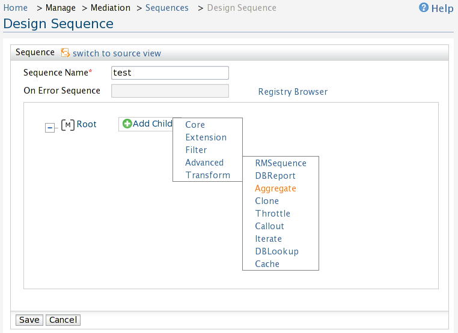
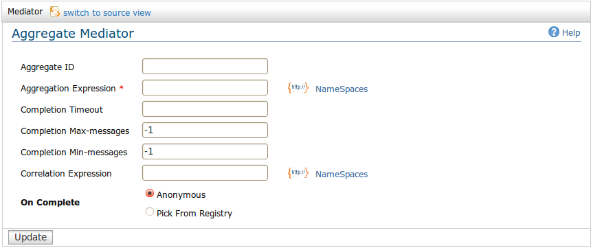

The aggregate mediator implements the Message Aggregator EIP and will
aggregate the messages or responses for splitted messages using either
the clone or iterate mediators. At the same time it can aggregate
messages on the presence of matching elements specified by the
correlateOn XPATH expression. Aggregate will collect the messages
coming into it until the messages collected on the aggregation
satisfies the complete condition. The completion condition can specify
a minimum or maximum number of messages to be collected, or a timeout
value in seconds, after which the aggregation terminates. On completion
of the aggregation it will merge all of the collected messages and
invoke the onComplete sequence on it. The merged message would be
created using the XPath expression specified by the attribute
'expression' on the 'onComplete' element.
Adding an Aggregate mediator
As shown in figure 1,
Click Add
Child
Go to Advanced
and click Aggregate

Figure 1: Adding an Aggregate mediator
Configuring aggregator specific options
After adding an aggregate mediator, clicking on it will open up the
aggregator specific options below the sequence editor. Figure 2 shows
all the aggregator specific options.

Figure 2: Aggregator specific options
Aggregate mediator field descriptions,
Field name
Description
Aggregate ID
This optional attribute can be used to aggregate only responses for splitted messages that
are created by a specific clone/iterate mediator. Aggregate ID should be same as the ID of the
corresponding clone/iterate mediator that creates splitted messages. This is particularly useful
when aggregating responses of messages that are created using nested clone/iterate mediators.
Aggregation Expression
An XPath expression specifying based on
which elements to aggregate. Set of messages that's taken for
aggregation is determined through Correlation
Expression.
Completion Timeout
Time that the aggregator waits for messages.
Completion Max-messages
Maximum number of messages that can exist in an
aggregation.
Completion Min-messages
Minimum number of messages required for the aggregation
to complete.
Correlation
Expression
An XPath expression specifying the pattern messages
will
be collected for aggregation. Specific aggregation condition will be
set through Aggregation
Expression.